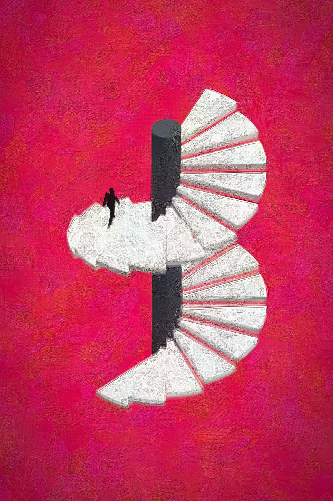

More line art
Down the Spiral Stairs
Crimson, Painted Minimalist Art
From A$12.82 (posters)
Shop on RedbubblePrints, canvas and postersShop on Zazzle4 productsWhite spiral stairs round a black column on crimson, a figure coming back down. Pairs with Up the Spiral Stairs. Original digital painting by Mirrors Fine Art: a lone figure among monumental shapes, brushwork and canvas texture throughout. Part of the Painted Illusions collection.
You'll finish your order on Redbubble or Zazzle. They print it, ship it and look after returns.